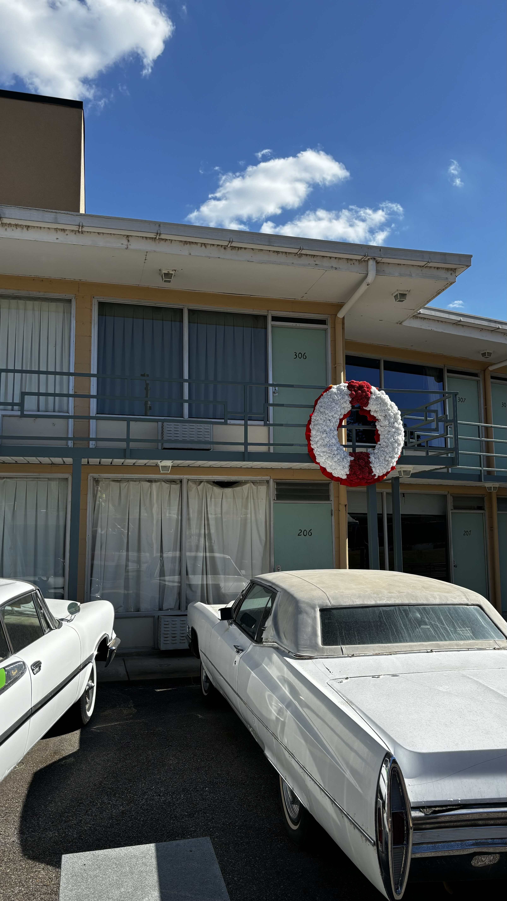

D11 又是一日三州 阿肯色 田纳西 密西西比(Oct25)
从阿肯色出来很快就进入了田纳西最西端的孟菲斯。田纳西州东西比较长，南北比较短。所以比较奇葩的是田纳西州内部居然有两个时区。我们在孟菲斯停留了很短的时间，就是去看了一下马丁路德金被刺杀的那个Motel，现在成了革命历史博物馆。居然门票还挺贵的，不太合理。但是既然已经到了门口，不进去不太合适。这在这时候领导的在阿拉巴马的同学联系上了，欢迎我们去他们家做客。在Birmingham，Al。老实说不怕人笑话，我以前真的不知道这个城市。也就是刚才在革命历史博物馆里看到黑兄弟们对抗人权不平等的几个主要的机会场所才知道这个城市。结果立马调转方向往南前往Birmingham。当天肯定是开不到了，所以一定是需要在密西西比州住一晚上。

因为在孟菲斯只呆了几个小时。印象不深刻。除了马丁路德金被暗杀的Motel之外，就是密西西比河边上有一个巨大的金字塔建筑。实际上是Bass Pro Shop，美国这里一个卖户外用品尤其是渔具的连锁店

继续南行，没多久就进入了密西西比州。这一天基本都在开车，所以没有什么照片留下来。